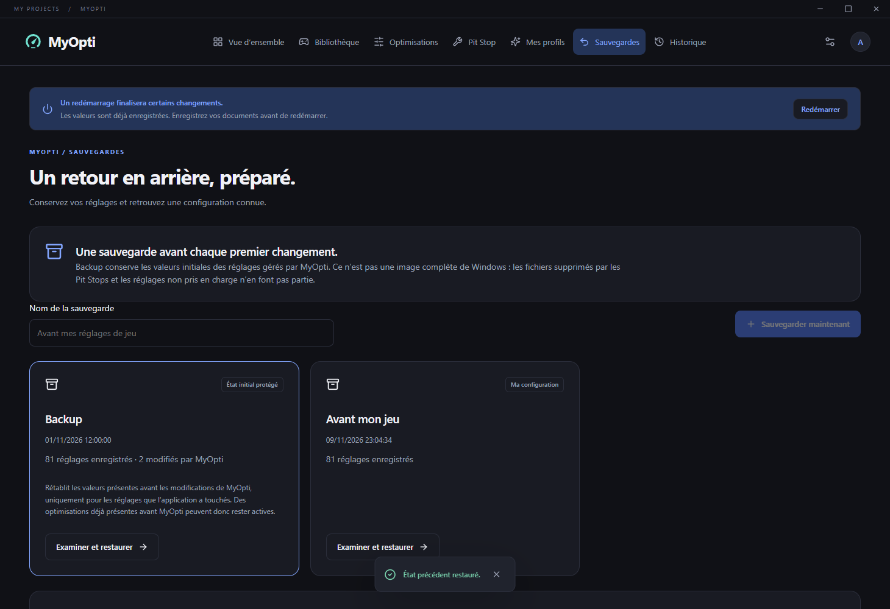

Comprenez chaque choix.
Performances, réseau, confort et confidentialité : effets, limites et protections concernées sont expliqués.
 My Projects
My ProjectsDes réglages compréhensibles, vos jeux réunis et des outils d’entretien. Découvrez les effets et les précautions avant chaque changement.
Windows 10/11 · 64 bits · Compte My Projects / MyVoice
Performances, réseau, confort et confidentialité : effets, limites et protections concernées sont expliqués.
Steam, Epic, Riot, Rockstar et Minecraft : détection locale, jaquettes et réglages par jeu. Connexion Steam ou import pour les jeux non installés.
Sélectionnez les entretiens utiles et consultez leurs résultats. Les tâches s’exécutent l’une après l’autre, avec date de réussite et rappels adaptés.
Backup conserve les valeurs initiales des réglages touchés par MyOpti. Enregistrez vos configurations, puis choisissez entre ajouter leurs options actives ou retrouver exactement leurs valeurs.

Compte partagé, vérification e-mail, Discord, formules Basique/Premium et nouvel écran de mise à jour. Paiements désactivés pour le moment. Les anciennes versions locales 0.2.1 sans canal nécessitent cette première installation manuelle.
Télécharger pour Windows ↗À partir de 0.5.1, les mises à jour sont téléchargées, vérifiées et installées au lancement. Pendant l’utilisation, une icône permet d’installer et relancer. La transition depuis 0.4 s’effectue à la fermeture complète de MyOpti. L’installateur ne possède pas encore de certificat d’éditeur Windows.
Les fonctions Windows prises en charge sont applicables. Certaines fonctions matérielles restent indisponibles selon l’adaptateur ou la configuration ; aucun gain de FPS n’est garanti.
Les jeux installés sont détectés à partir des fichiers des lanceurs. La bibliothèque Steam complète nécessite une connexion explicite avec votre clé API personnelle et un profil de jeux visible. Pour Epic, Riot, Rockstar et Minecraft, les jeux non installés peuvent être ajoutés par import de liste ; une connexion universelle à leurs achats n’est pas disponible.
Les mesures, historiques et sauvegardes de réglages restent sur le PC. Les comptes utilisent My Projects / MyVoice. Les jaquettes sont récupérées auprès des catalogues publics.
Les réglages modifiés disposent de valeurs de restauration. Les suppressions de caches et de fichiers ne sont pas annulables ; les précautions sont affichées avant exécution.